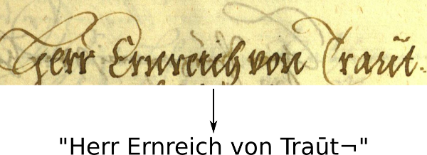
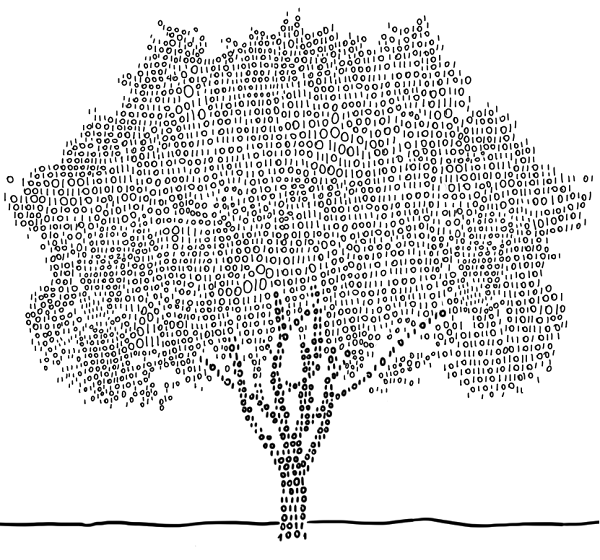

Welcome
My name is Harald Scheidl. During my thesis I worked on handwritten text recognition with neural network. On this page I show:
- parts of the code from the thesis (I open-sourced most of the Python code, while keeping C++ and GPU code mostly closed-source)
- thesis on handwritten text recognition and a paper about a novel CTC decoding algorithm
- articles published on Towards Data Science, which are polished-up notes I made during the thesis on different topics relevant to me
python -c "print('%s_%s@hotmail.com'%('harald','scheidl'))"
Text recognition
SimpleHTR

A neural network which recognizes text contained in images. The network consists of CNN, RNN and CTC layers and is implemented using Python and TensorFlow. The network is kept small (outputs a sequence of at most 32 characters) by purpose to be trainable on CPUs in reasonable time.
CTCWordBeamSearch

A CTC decoding algorithm which uses a dictionary to constrain recognized words, but at the same time allows arbitrary character strings (e.g. numbers) between words. Results are improved compared to other decoders if a suitable dictionary and/or language model is available. Implemented with C++ and Python, can be integrated into TensorFlow as a custom operation.
CTCDecoder

Some well-known CTC decoders implemented in Python: best path decoding, prefix search decoding, beam search decoding, token passing and lexicon search. Additionally, the CTC loss function is included (however, without any back-propagation).
DeslantImg

Deslanting sets text upright (i.e. minimizes the slant angle of text). This can be used if a text is written with a cursive writing style. It might or might not improve the recognition results (depends on the data, you have to do experiments to see if it makes sense in your case). Implemented in C++ and OpenCL.
WordSegmentation

The SimpleHTR model is kept small for performance-reasons and can recognize 32 characters at most. If you need to do text recognition on text-lines or sentences, you can first split the text-line into words and then feed each word separately into the classifier. This repository does exactly this: it segments a line of text into words. Implemented in Python.
Thesis and paper
Thesis

- Title: "Handwritten text recognition in historical documents"
- Contributions
- Analysis of different neural network architectures and parameters
- Word segmentation using the output of the RNN layers
- CNN-based replacement of the RNN layers (enabling a purely convolutional architecture)
- Constrained CTC decoding algorithm (see paper for more details)
Paper
- Title: "Word Beam Search: A Connectionist Temporal Classification Decoding Algorithm"
- Presented at the 16th International Conference on Frontiers in Handwriting Recognition, 2018, Niagara Falls, USA
- Properties of proposed algorithm
- Decodes output of CTC-trained neural network
- Words constrained by dictionary
- Allows arbitrary number of non-word characters between words
- Optional word-level language model
- Faster than token passing
Articles
Build a Handwritten Text Recognition System using TensorFlow

This article explains how to build a modern (handwritten) text recognition system. Besides a theoretical introduction, the code of the SimpleHTR repository is discussed.
FAQ: Build a Handwritten Text Recognition System using TensorFlow

There were some questions regarding the last article which are discussed here: how to use custom datasets, how to detect text on line-level and how to compute a confidence score for the recognized text.
An Intuitive Explanation of Connectionist Temporal Classification

CTC is an essential part of modern text and speech recognition systems. This article explains how CTC works without hiding the clever ideas it is based on behind complicated formulas.
Beam Search Decoding in CTC-trained Neural Networks

To get the recognized text from a CTC-trained neural network, its output must be decoded. Beam search decoding is a fast and well-performing algorithm which optionally can integrated a character-level language model.
Word Beam Search: A CTC Decoding Algorithm
Word beam search is an extension to the vanilla beam search algorithm. It avoids spelling mistakes of words, allows arbitrary numbers and punctuation marks between words and optionally makes use of a word-level language model. This article gives a high-level overview of how the algorithm works.